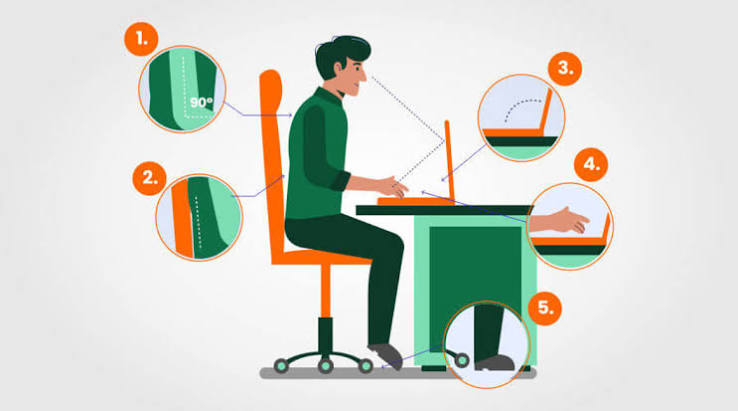
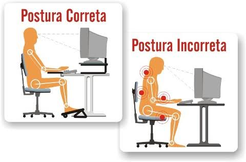

O que define um ambiente ergonômico e seguro?
Um ambiente ergonômico é aquele em que o posto de trabalho, os equipamentos, as condições do local e a organização das tarefas respeitam as características e os limites das pessoas, promovendo conforto, segurança, saúde e bom desempenho. É o que a NR-17 busca garantir (BRASIL, 2021).
Elementos de um ambiente ergonômico
| Elemento | O que observar | Quem é beneficiado |
|---|---|---|
| Mobiliário | Cadeira regulável com apoio lombar, mesa em altura adequada, apoio para os pés quando necessário. | Trabalhadores e estudantes |
| Equipamentos | Monitor, teclado, mouse e ferramentas bem posicionados e adequados à tarefa. | Trabalhadores |
| Condições ambientais | Iluminação sem reflexos, ruído controlado e temperatura confortável. | Todos |
| Organização do trabalho | Ritmo realista, pausas, variação de tarefas e participação dos trabalhadores. | Trabalhadores |
| Informação e interface | Telas, sinalização e instruções claras para evitar erros. | Clientes e usuários |
| Acesso e circulação | Espaços acessíveis e seguros para pessoas com diferentes necessidades (ABNT NBR 9050). | Clientes e usuários |
Fonte: elaborado pelos autores com base em BRASIL (2021) e IEA (2020).
Postura sentada ao computador
As medidas abaixo são referências usadas em materiais didáticos de ergonomia, como as ilustrações desta página. Elas devem ser ajustadas à pessoa e à tarefa.

Fonte: [colar aqui o URL da imagem]
- Costas e quadril: bem apoiados, formando cerca de 90°.
- Encosto: acompanha a curvatura da coluna, com apoio na região lombar.
- Tela: parte de cima na altura dos olhos ou um pouco abaixo, sem reflexos.
- Braços: cotovelos próximos de 90°, antebraços apoiados e punhos retos.
- Pés: apoiados no chão ou em um apoio, com joelhos próximos de 90°.

Fonte: [colar aqui o URL da imagem]
Também vale para levantar peso e usar o celular
- Ao pegar uma carga do chão, dobre os joelhos e mantenha a carga perto do corpo.
- Evite curvar a coluna para frente com o peso longe do corpo.
- No celular, levante o aparelho até perto da altura dos olhos para não curvar o pescoço.

Fonte: [colar aqui o URL da imagem]
Para quem vale?
- Trabalhadores: a organização deve avaliar as situações de trabalho e adotar medidas de prevenção (NR-17).
- Clientes e usuários: balcões, caixas, sinalização e acessibilidade também precisam ser pensados para quem usa o espaço.
- Estudantes e home office: os mesmos princípios de postura e pausas se aplicam fora da empresa.
Checklist: como está o seu posto de trabalho?
Marque o que já acontece com você. Este checklist é só educativo e não substitui a avaliação ergonômica feita por profissional habilitado.
Marque os itens para ver o resultado.